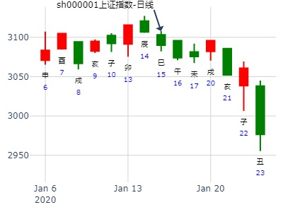
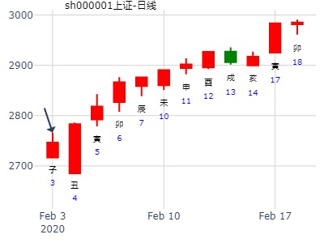
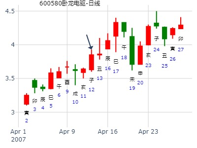
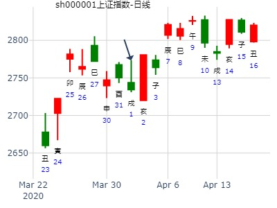
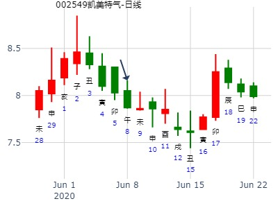
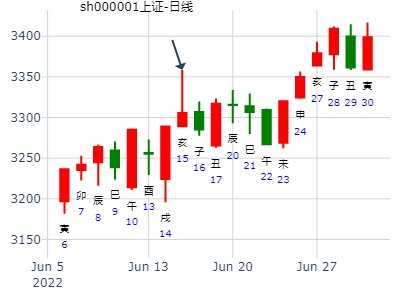
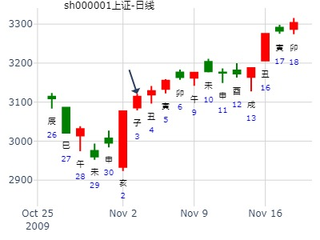
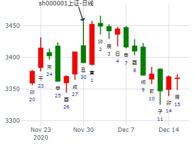
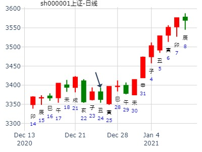

主帖标题: 关注一23005478本周涨跌
15日涨跌
手摇卦
公历时间：2020年1月15日6时58分
干 支：己亥年 丁丑月 丁巳日 癸卯时
旬 空：辰巳 申酉 子丑 辰巳
神 煞：驿马─亥 桃花─午 日禄─午 贵人─酉，亥
坤宫：坤为地（六冲）
六神 【本 卦】
青龙 ▄▄ ▄▄ 子孙癸酉金 世
玄武 ▄▄ ▄▄ 妻财癸亥水
白虎 ▄▄ ▄▄ 兄弟癸丑土
螣蛇 ▄▄ ▄▄ 官鬼乙卯木 应
勾陈 ▄▄ ▄▄ 父母乙巳火
朱雀 ▄▄ ▄▄ 兄弟乙未土

主帖标题: T-Z-G-D上证指数擂台赛第五场第5局（2020年2月3日）G方
代老师出卦
公历时间：2020年2月3日8时25分
干 支：己亥年 丁丑月 丙子日 壬辰时
旬 空：辰巳 申酉 申酉 午未
神 煞：驿马─寅 桃花─酉 日禄─巳 贵人─酉，亥
坤宫：坤为地（六冲）
六神 【本 卦】
青龙 ▄▄ ▄▄ 子孙癸酉金 世
玄武 ▄▄ ▄▄ 妻财癸亥水
白虎 ▄▄ ▄▄ 兄弟癸丑土
螣蛇 ▄▄ ▄▄ 官鬼乙卯木 应
勾陈 ▄▄ ▄▄ 父母乙巳火
朱雀 ▄▄ ▄▄ 兄弟乙未土

捍卫老祖宗感通卦的尊严：测2020.3.10上证收盘走势？
占事：测2020.3.10上证收盘走势？
公历起卦时间：2020年3月10日8时44分 (电脑自动)
干支：庚子年 己卯月 壬子日 甲辰时 （日空：寅卯）
神煞：驿马－寅 桃花－酉 日禄－亥 贵人－卯，巳
坤宫：坤为地 (六冲)
六神 伏神 本 卦
白虎 子孙癸酉金 ▅▅ ▅▅ 世
螣蛇 妻财癸亥水 ▅▅ ▅▅
勾陈 兄弟癸丑土 ▅▅ ▅▅
朱雀 官鬼乙卯木 ▅▅ ▅▅ 应
青龙 父母乙巳火 ▅▅ ▅▅
玄武 兄弟乙未土 ▅▅ ▅▅
占问：4月12日周四600580卧龙电器做空可能胜出吗？
起卦方式：手动摇卦
公历时间：2007年4月12日0时22分 星期四
农历时间：丁亥年二月廿五子时
干支：丁亥年 甲辰月 丙子日 戊子时 (旬空：申酉)
神煞：驿马—寅 桃花—酉 日禄—巳 贵人—酉，亥
坤宫：坤为地（六冲） 六神 【本 卦】
青龙 ▅▅ ▅▅ 子孙癸酉金 世
玄武 ▅▅ ▅▅ 妻财癸亥水
白虎 ▅▅ ▅▅ 兄弟癸丑土
螣蛇 ▅▅ ▅▅ 官鬼乙卯木 应
勾陈 ▅▅ ▅▅ 父母乙巳火
朱雀 ▅▅ ▅▅ 兄弟乙未土

占事：600228昌九生化本周涨跌
公历起卦时间：2014年4月7日8时8分 (电脑自动)
干支：甲午年 戊辰月 戊申日 丙辰时 （日空：寅卯）
神煞：驿马－寅 桃花－酉 日禄－巳 贵人－丑，未
坤宫：坤为地 (六冲)
六神 伏神 本 卦
朱雀 子孙癸酉金 ▅▅ ▅▅ 世
青龙 妻财癸亥水 ▅▅ ▅▅
玄武 兄弟癸丑土 ▅▅ ▅▅
白虎 官鬼乙卯木 ▅▅ ▅▅ 应
腾蛇 父母乙巳火 ▅▅ ▅▅
勾陈 兄弟乙未土 ▅▅ ▅▅
试测钱江水利3.31-4.3何时顶
男 占事：没填
公历起卦时间：2020年4月1日12时36分 (电脑自动)
干支：庚子年 己卯月 甲戌日 庚午时 （日空：申酉）
神煞：驿马－申 桃花－卯 日禄－寅 贵人－丑，未
坤宫：坤为地 (六冲)
六神 伏神 本 卦
玄武 子孙癸酉金 ▅▅ ▅▅ 世
白虎 妻财癸亥水 ▅▅ ▅▅
螣蛇 兄弟癸丑土 ▅▅ ▅▅
勾陈 官鬼乙卯木 ▅▅ ▅▅ 应
朱雀 父母乙巳火 ▅▅ ▅▅
青龙 兄弟乙未土 ▅▅ ▅▅

主帖标题: 华鑫股份600621明天可能涨停板
事：600621华鑫股份明天涨跌
公历起卦时间：2016年5月4日15时46分 (电脑自动)
干支：丙申年 壬辰月 丙戌日 丙申时 （日空：午未）
神煞：驿马－申 桃花－卯 日禄－巳 贵人－酉，亥
坤宫：坤为地 (六冲)
六神 伏神 本 卦
青龙 子孙癸酉金 ▅▅ ▅▅ 世
玄武 妻财癸亥水 ▅▅ ▅▅
白虎 兄弟癸丑土 ▅▅ ▅▅
腾蛇 官鬼乙卯木 ▅▅ ▅▅ 应
勾陈 父母乙巳火 ▅▅ ▅▅
朱雀 兄弟乙未土 ▅▅ ▅▅
《周易》——坤为地 坤
主帖标题: 上证5.20收盘走势？jsfs
上证5.20收盘走势？
男 占事：没填
公历起卦时间：2022年5月20日9时51分 (电脑自动)
干支：壬寅年 乙巳月 癸酉日 丁巳时 （日空：戌亥）
神煞：驿马－亥 桃花－午 日禄－子 贵人－卯，巳
坤宫：坤为地 (六冲)
六神 伏神 本 卦
白虎 子孙癸酉金 ▅▅ ▅▅ 世
螣蛇 妻财癸亥水 ▅▅ ▅▅
勾陈 兄弟癸丑土 ▅▅ ▅▅
朱雀 官鬼乙卯木 ▅▅ ▅▅ 应
青龙 父母乙巳火 ▅▅ ▅▅
玄武 兄弟乙未土 ▅▅ ▅▅
占事：2014年7月大盘走势 作者：wukevin
起卦方式：手动摇卦
公历时间：2014年6月29日16时30分
干 支：甲午年 庚午月 辛未日 丙申时 (戌亥)
坤宫：坤为地（六冲）
六神 【本 卦】
螣蛇 ▄▄ ▄▄ 子孙癸酉金 世
勾陈 ▄▄ ▄▄ 妻财癸亥水
朱雀 ▄▄ ▄▄ 兄弟癸丑土
青龙 ▄▄ ▄▄ 官鬼乙卯木 应
玄武 ▄▄ ▄▄ 父母乙巳火
白虎 ▄▄ ▄▄ 兄弟乙未土
2014年大牛启动前的大底。妻财弱，但是旬空可能是玄机？
主帖标题: 2020.6.8日-12日个股（周测）002549
占事：002549 2020.6.8日-12日个股（周测）
公历时间：2020年6月7日20时52分
干 支：庚子年 壬午月 辛巳日 戊戌时
旬 空：辰巳 申酉 申酉 辰巳
神 煞：驿马─亥 桃花─午 日禄─酉 贵人─寅，午
坤宫：坤为地（六冲）
六神 【本 卦】
螣蛇 ▄▄ ▄▄ 子孙癸酉金 世
勾陈 ▄▄ ▄▄ 妻财癸亥水
朱雀 ▄▄ ▄▄ 兄弟癸丑土
青龙 ▄▄ ▄▄ 官鬼乙卯木 应
玄武 ▄▄ ▄▄ 父母乙巳火
白虎 ▄▄ ▄▄ 兄弟乙未土

北方华创6.18壬辰四-6.26庚子五何时顶？
公历起卦时间：2020年6月19日9时21分 (电脑自动)
干支：庚子年 壬午月 癸巳日 丁巳时 （日空：午未）
神煞：驿马－亥 桃花－午 日禄－子 贵人－卯，巳
坤宫：坤为地 (六冲)
六神 伏神 本 卦
白虎 子孙癸酉金 ▅▅ ▅▅ 世
螣蛇 妻财癸亥水 ▅▅ ▅▅
勾陈 兄弟癸丑土 ▅▅ ▅▅
朱雀 官鬼乙卯木 ▅▅ ▅▅ 应
青龙 父母乙巳火 ▅▅ ▅▅
玄武 兄弟乙未土 ▅▅ ▅▅
主帖标题: 北方华创6.10己丑四-6.16乙未三何时顶？
公历起卦时间：2021年6月13日7时18分 (电脑自动)
干支：辛丑年 甲午月 壬辰日 甲辰时 （日空：午未）
神煞：驿马－寅 桃花－酉 日禄－亥 贵人－卯，巳
坤宫：坤为地 (六冲)
六神 伏神 本 卦
白虎 子孙癸酉金 ▅▅ ▅▅ 世
螣蛇 妻财癸亥水 ▅▅ ▅▅
勾陈 兄弟癸丑土 ▅▅ ▅▅
朱雀 官鬼乙卯木 ▅▅ ▅▅ 应
青龙 父母乙巳火 ▅▅ ▅▅
玄武 兄弟乙未土 ▅▅ ▅▅
占事: 300491短线
公历时间：2021年6月19日12时7分
干 支：辛丑年 甲午月 戊戌日 戊午时
旬 空：辰巳 辰巳 辰巳 子丑
神 煞：驿马─申 桃花─卯 日禄─巳 贵人─丑，未
中国预测网纳甲六爻排盘
坤宫：坤为地（六冲）
六神 【本 卦】
朱雀 ▄▄ ▄▄ 子孙癸酉金 世
青龙 ▄▄ ▄▄ 妻财癸亥水
玄武 ▄▄ ▄▄ 兄弟癸丑土
白虎 ▄▄ ▄▄ 官鬼乙卯木 应
螣蛇 ▄▄ ▄▄ 父母乙巳火
勾陈 ▄▄ ▄▄ 兄弟乙未土
男 占事：6.16上证收盘走势？
公历起卦时间：2022年6月15日19时7分 (电脑自动)
干支：壬寅年 丙午月 己亥日 甲戌时 （日空：辰巳）
神煞：驿马－巳 桃花－子 日禄－午 贵人－子，申
坤宫：坤为地 (六冲)
六神 伏神 本 卦
勾陈 子孙癸酉金 ▅▅ ▅▅ 世
朱雀 妻财癸亥水 ▅▅ ▅▅
青龙 兄弟癸丑土 ▅▅ ▅▅
玄武 官鬼乙卯木 ▅▅ ▅▅ 应
白虎 父母乙巳火 ▅▅ ▅▅
螣蛇 兄弟乙未土 ▅▅ ▅▅

占事：300124汇川技术二周涨跌？
公历起卦时间：2014年7月8日15时58分 (在线摇卦)
干支：甲午年 辛未月 庚辰日 甲申时 （日空：申酉）
坤宫：坤为地 (六冲)
六神 伏神 本 卦
腾蛇 子孙癸酉金 ▅▅ ▅▅ 世
勾陈 妻财癸亥水 ▅▅ ▅▅
朱雀 兄弟癸丑土 ▅▅ ▅▅
青龙 官鬼乙卯木 ▅▅ ▅▅ 应
玄武 父母乙巳火 ▅▅ ▅▅
白虎 兄弟乙未土 ▅▅ ▅▅
占事: 明天 000727
公历起卦时间：2020年7月26日20时50分 (在线摇卦)
干支：庚子年 癸未月 庚午日 丙戌时 （日空：戌亥）
神煞：驿马－申 桃花－卯 日禄－申 贵人－丑，未
坤宫：坤为地 (六冲)
六神 伏神 本 卦
螣蛇 子孙癸酉金 ▅▅ ▅▅ 世
勾陈 妻财癸亥水 ▅▅ ▅▅
朱雀 兄弟癸丑土 ▅▅ ▅▅
青龙 官鬼乙卯木 ▅▅ ▅▅ 应
玄武 父母乙巳火 ▅▅ ▅▅
白虎 兄弟乙未土 ▅▅ ▅▅
占事：8月13-17日大盘涨跌？
公历起卦时间：2012年8月10日15时45分 (手工指定)
干支：壬辰年 戊申月 癸卯日 庚申时 （日空：辰巳）
神煞：驿马－巳 桃花－子 日禄－子 贵人－卯，巳
坤宫：坤为地 (六冲)
六神 伏神 本 卦
白虎 子孙癸酉金 ▅▅ ▅▅ 世
腾蛇 妻财癸亥水 ▅▅ ▅▅
勾陈 兄弟癸丑土 ▅▅ ▅▅
朱雀 官鬼乙卯木 ▅▅ ▅▅ 应
青龙 父母乙巳火 ▅▅ ▅▅
玄武 兄弟乙未土 ▅▅ ▅▅
主帖标题: 2016第28局股市预测大赛
占事：上证下周走势
起卦方式：电脑自动
公历时间：2016年08月21日17时14分
神 煞：驿马─巳 桃花─子 日禄─卯 贵人─子 申
干 支：丙申年 丙申月 乙亥日 乙酉时 日 空：申酉
坤宫：坤为地（六冲）
六神 【本 卦】
玄武 ▅▅ ▅▅ 子孙癸酉金 世
白虎 ▅▅ ▅▅ 妻财癸亥水
螣蛇 ▅▅ ▅▅ 兄弟癸丑土
勾陈 ▅▅ ▅▅ 官鬼乙卯木 应
朱雀 ▅▅ ▅▅ 父母乙巳火
青龙 ▅▅ ▅▅ 兄弟乙未土
财旺子孙空一周看跌
星期一涨
星期二趺
星期三涨
星期四趺
星期五趺
主题：明天买入华纺股份[600448]能否得财？
丁亥 戊申 庚子 乙酉 (辰巳空)
丁亥年七月廿二(2007/09/03 17:16:36)
坤为地腾蛇 子孙酉金 ∥ 世
勾陈 妻财亥水 ∥
朱雀 兄弟丑土 ∥
青龙 官鬼卯木 ∥ 应
玄武 父母巳火 ∥
白虎 兄弟未土 ∥
占事：2012年10月大盘涨跌？
公历起卦时间：2012年9月28日15时16分 (手工指定)
干支：壬辰年 己酉月 壬辰日 戊申时 （日空：午未）
神煞：驿马－寅 桃花－酉 日禄－亥 贵人－卯，巳
坤宫：坤为地 (六冲)
六神 伏神 本 卦
白虎 子孙癸酉金 ▅▅ ▅▅ 世
腾蛇 妻财癸亥水 ▅▅ ▅▅
勾陈 兄弟癸丑土 ▅▅ ▅▅
朱雀 官鬼乙卯木 ▅▅ ▅▅ 应
青龙 父母乙巳火 ▅▅ ▅▅
玄武 兄弟乙未土 ▅▅ ▅▅
9.14-21周，大盘还是不怎么样 卦者： Rhoda
公历起卦时间：2018年9月13日20时48分 (手工指定) Rhoda
干支：戊戌年 辛酉月 戊申日 壬戌时 （日空：寅卯）
神煞：驿马－寅 桃花－酉 日禄－巳 贵人－丑，未
坤宫：坤为地 (六冲)
六神 伏神 本 卦
朱雀 子孙癸酉金 ▅▅ ▅▅ 世
青龙 妻财癸亥水 ▅▅ ▅▅
玄武 兄弟癸丑土 ▅▅ ▅▅
白虎 官鬼乙卯木 ▅▅ ▅▅ 应
腾蛇 父母乙巳火 ▅▅ ▅▅
勾陈 兄弟乙未土 ▅▅ ▅▅
2644最低点， 正好也是坤为地见底卦。
经典见底卦。
主帖标题: 603536 惠发食品 能否买进持股？
午后慢1秒，六冲撤单，子孙得月令临青龙，财空。
女 占事：没填
公历起卦时间：2020年9月21日13时28分 (在线摇卦)
干支：庚子年 乙酉月 丁卯日 丁未时 （日空：戌亥）
神煞：驿马－巳 桃花－子 日禄－午 贵人－酉，亥
坤宫：坤为地 (六冲)
六神 伏神 本 卦
青龙 子孙癸酉金 ▅▅ ▅▅ 世
玄武 妻财癸亥水 ▅▅ ▅▅
白虎 兄弟癸丑土 ▅▅ ▅▅
螣蛇 官鬼乙卯木 ▅▅ ▅▅ 应
勾陈 父母乙巳火 ▅▅ ▅▅
朱雀 兄弟乙未土 ▅▅ ▅▅
主帖标题: 周二创业板2.253
主题：周二创业板
壬寅年己酉月壬午日庚戌时(申酉空)
壬寅年八月初四(2022/09/26 20:47)
坤为地
白虎 子孙酉金 ∥ 世
腾蛇 妻财亥水 ∥
勾陈 兄弟丑土 ∥
朱雀 官鬼卯木 ∥ 应
青龙 父母巳火 ∥
玄武 兄弟未土 ∥
主帖标题: (2009) 11月04~06日 大盘流程 攻略模拟
2009-11-03
己丑年 甲戌月 乙卯日 辛巳时 日空亡：子丑
坤宫：坤为地 (六冲)
六神 伏神 本 卦
腾蛇 子孙癸酉 ▅▅ ▅▅ 世
勾陈 妻财癸亥 ▅▅ ▅▅
朱雀 兄弟癸丑 ▅▅ ▅▅
青龙 官鬼乙卯 ▅▅ ▅▅ 应
玄武 父母乙巳 ▅▅ ▅▅
白虎 兄弟乙未 ▅▅ ▅▅

明天周二涨跌
公历时间：2020年11月30日22时2分
干 支：庚子年 丁亥月 丁丑日 辛亥时
旬 空：辰巳 午未 申酉 寅卯
神 煞：驿马─亥 桃花─午 日禄─午 贵人─酉，亥
坤宫：坤为地（六冲）
六神 【本 卦】
青龙 ▄▄ ▄▄ 子孙癸酉金 世
玄武 ▄▄ ▄▄ 妻财癸亥水
白虎 ▄▄ ▄▄ 兄弟癸丑土
螣蛇 ▄▄ ▄▄ 官鬼乙卯木 应
勾陈 ▄▄ ▄▄ 父母乙巳火
朱雀 ▄▄ ▄▄ 兄弟乙未土

牧心提供：
占问事宜：大盘股市是否走牛-经典见底
自动起卦(起卦方式)
占问事宜：股市是否走牛
公历：2008年12月23日8时37分，星期二。
干支：戊子年 甲子月 丁酉日 甲辰时 (卦身：亥)
主变卦 坤为地(坤宫) [空亡:辰、巳]
青龙 ▅▅ ▅▅ 子孙癸酉金 世
玄武 ▅▅ ▅▅ 妻财癸亥水
白虎 ▅▅ ▅▅ 兄弟癸丑土
螣蛇 ▅▅ ▅▅ 官鬼乙卯木 应
勾陈 ▅▅ ▅▅ 父母乙巳火
朱雀 ▅▅ ▅▅ 兄弟乙未土
明天周五涨跌
公历时间：2020年12月24日22时14分
干 支：庚子年 戊子月 辛丑日 己亥时
旬 空：辰巳 午未 辰巳 辰巳
神 煞：驿马─亥 桃花─午 日禄─酉 贵人─寅，午
坤宫：坤为地（六冲）
六神 【本 卦】
螣蛇 ▄▄ ▄▄ 子孙癸酉金 世
勾陈 ▄▄ ▄▄ 妻财癸亥水
朱雀 ▄▄ ▄▄ 兄弟癸丑土
青龙 ▄▄ ▄▄ 官鬼乙卯木 应
玄武 ▄▄ ▄▄ 父母乙巳火
白虎 ▄▄ ▄▄ 兄弟乙未土
